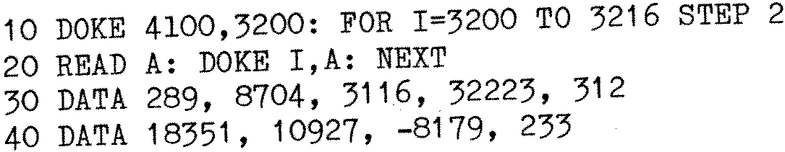

80-Bus News |
April–June 1982 · Volume 1 · Issue 2 |
| Page 7 of 55 |
|---|
Nascom BASIC
This piece of information may well be common knowledge among the wiser Nascomers, but I feel sure that many people will be glad of it.
The USR routine to scan the keyboard under Nas-Sys 3, given in Appendix I of the Nascom BASIC manual, only detects the initial pressing of a key, and returns a 0 if the latter is subsequently held down and the routine re-run. The solution is to load the keyboard repeat counter (KCNT) with 1, before calling the input routine RKBD. The subroutine becomes:

In BASIC, this is:

Michael D’Arcy, Bristol
EPROM Erasers & IMP ribbons
A cheap alternative to forking out £40 odd for an EPROM Eraser is the ordinary UV Sunlamp. Having no idea whether the power or UV frequency would be suitable, I did some experiments and found that 20 min at 1″ from the UV bulb did the trick. The lamp I used was the small Boots one and this has 2 IR heating elements which are an essential part of the circuit and cannot be disconnected. To avoid the EPROM being cooked I mounted it on a wet sponge and directed a fan at it – These measures kept the EPROM fairly cool. Some experiments will probably be needed, as the lamp may differ from mine. I can’t guarantee the EPROM won’t be damaged by heat but they are cheap enough to take the risk – I have now erased mine many times without trouble however.
Does any reader have any information on how to re-ink ribbons for the Imp – i.e. type of ink and where it can be obtained? (I know it can be done with the correct ink despite the manual recommending this is not attempted). Incidentally I note that the article in INMC 80-4 on Imprint mentioned oiling the cam. I believe this may be inadvisable since ordinary oil can cause the nylon to distort. My interpretation of the manual is that only IBM 22 or equivalent grease should be used on the nylon bits (oil is OK on the metal rail). I had trouble in getting this locally and got it direct from the Great IBM (Greenford) by post.
P.A.Cooper of Brentwood, Essex
ERROR !
With reference to Dr. Dark’s Diary in the last issue of 80-Bus News, the section titled ‘Another Nas-Sys 3 fix’ contains an error. The location that requires alteration is B15B.
| Page 7 of 55 |
|---|